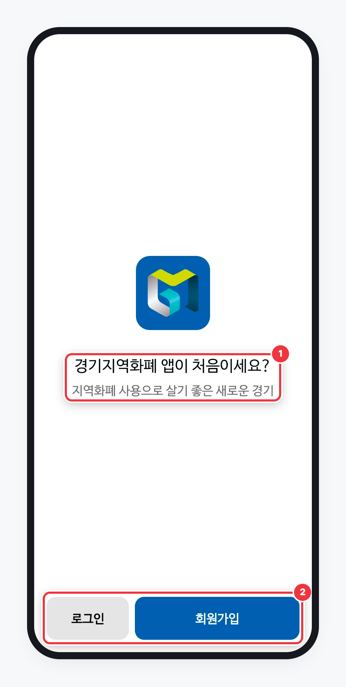
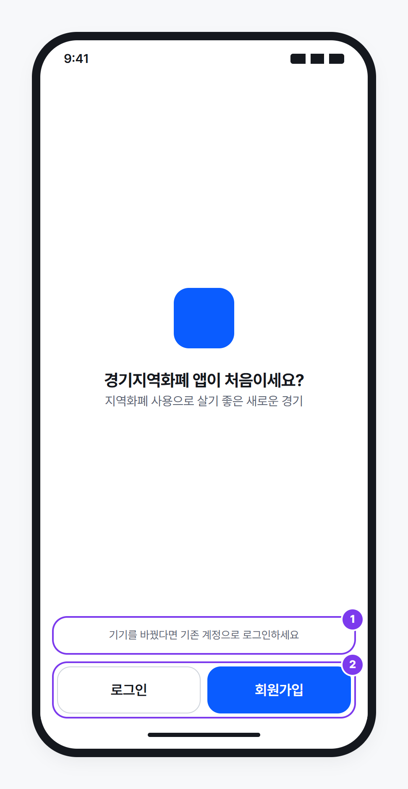
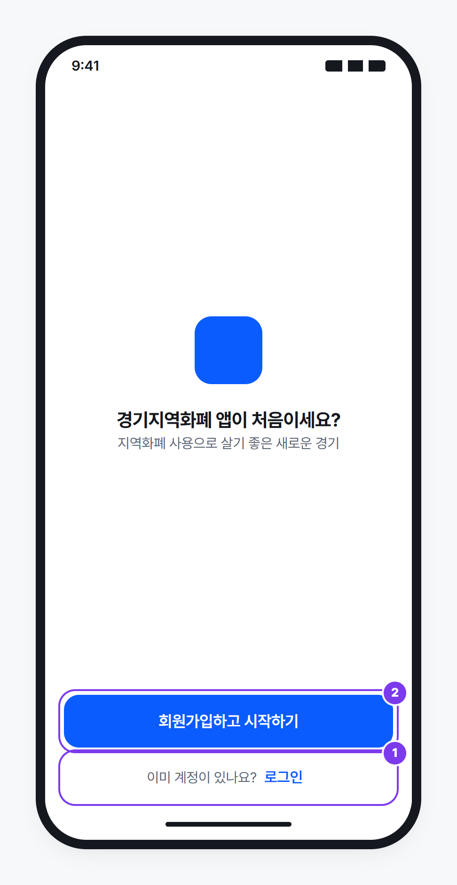

이 두 버튼, 정말 이 정도로 차이를 둬야할까?
경기지역화폐 · 앱 실행 › 로그인/회원가입 화면
BEFORE

제안 A

제안 B

1
문구가 신규 가입자에게만 말을 걺
"앱이 처음이세요?" — 기존 사용자를 위한 안내가 없음
2
회원가입이 로그인의 약 2배 너비
넓은 Primary 버튼으로 손이 먼저 감
제안 A · 같은 너비 + 안내 한 줄
① 기기를 바꾼 사람을 위한 안내 ② 위계는 색으로만
제안 B · 시작은 하나, 로그인은 문장으로
① "이미 계정이 있나요? 로그인" ② 나란히 놓인 버튼을 없애 잘못 누를 일을 줄임